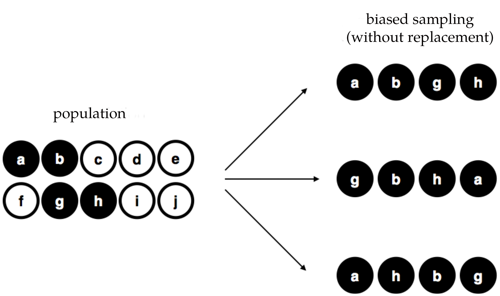
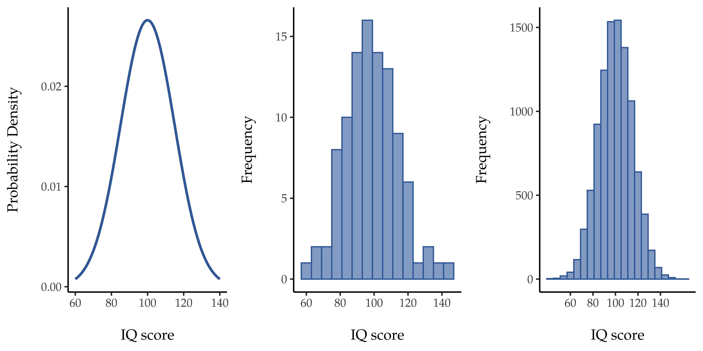
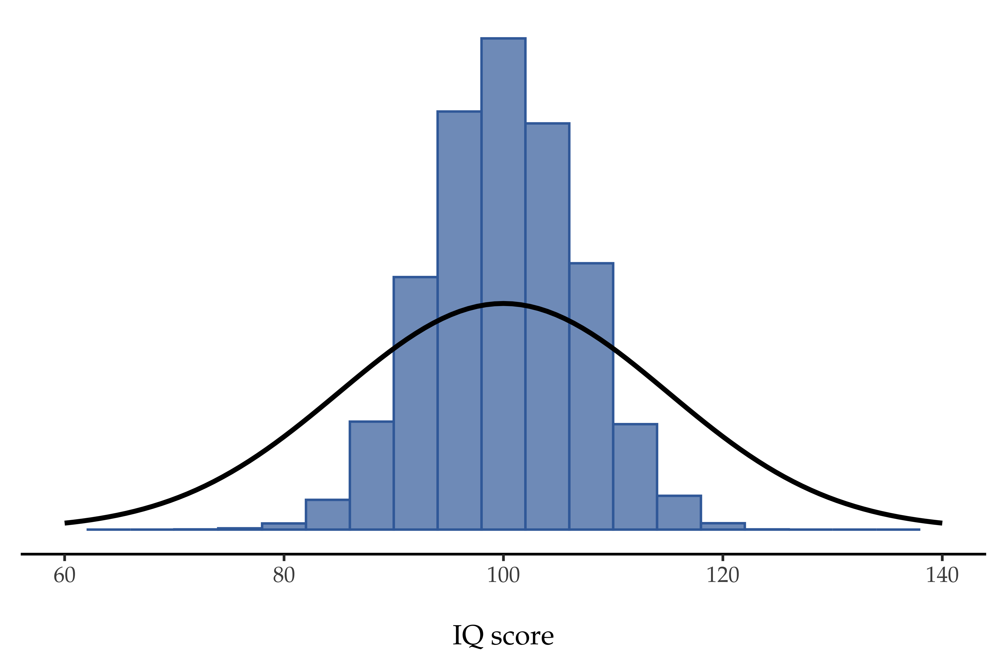
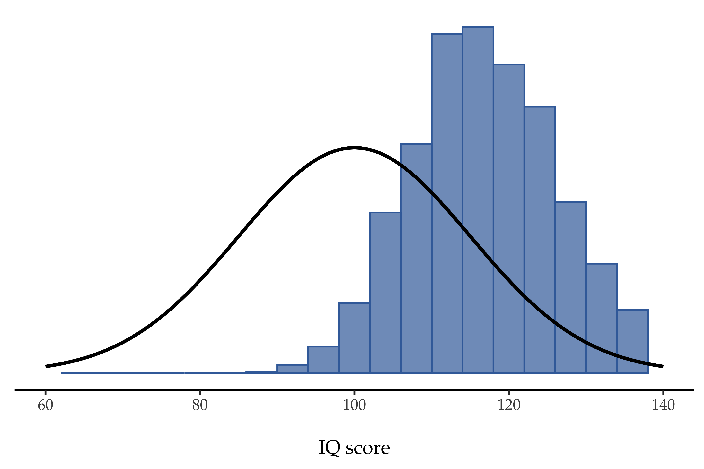
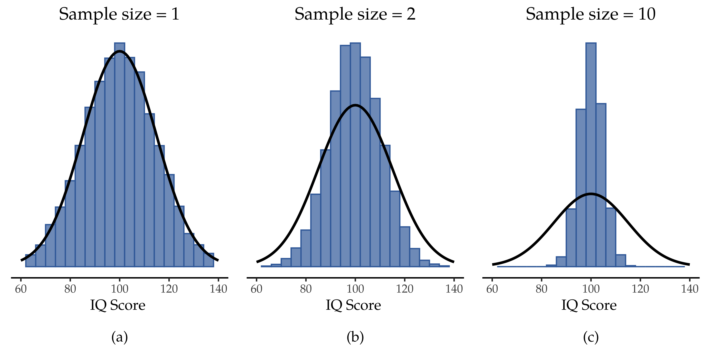
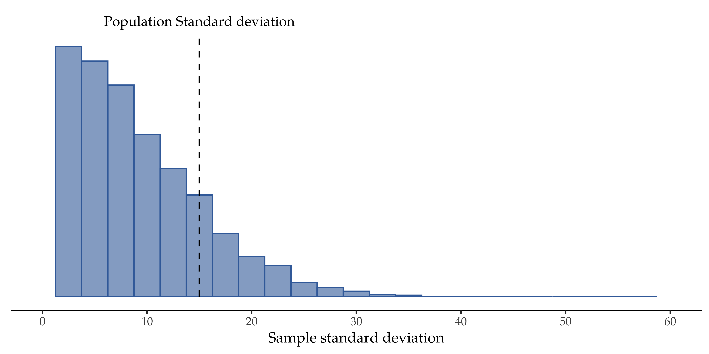

8 Estimating unknown quantities from a sample
At the start of the last chapter I highlighted the critical distinction between descriptive statistics and inferential statistics. As discussed in Chapter 4, the role of descriptive statistics is to concisely summarise what we do know. In contrast, the purpose of inferential statistics is to “learn what we do not know from what we do”. Now that we have a foundation in probability theory we are in a good position to think about the problem of statistical inference. What kinds of things would we like to learn about? And how do we learn them? These are the questions that lie at the heart of inferential statistics, and they are traditionally divided into two “big ideas”: estimation and hypothesis testing. The goal in this chapter is to introduce the first of these big ideas, estimation theory, but I’m going to witter on about sampling theory first because estimation theory doesn’t make sense until you understand sampling. As a consequence, this chapter divides naturally into two parts, the first three sections are focused on sampling theory, and the last two sections make use of sampling theory to discuss how statisticians think about estimation.
8.1 Samples, populations and sampling
In the Prelude to part IV I discussed the riddle of induction and highlighted the fact that all learning requires you to make assumptions. Accepting that this is true, our first task to come up with some fairly general assumptions about data that make sense. This is where sampling theory comes in. If probability theory is the foundations upon which all statistical theory builds, sampling theory is the frame around which you can build the rest of the house. Sampling theory plays a huge role in specifying the assumptions upon which your statistical inferences rely. And in order to talk about “making inferences” the way statisticians think about it we need to be a bit more explicit about what it is that we’re drawing inferences from (the sample) and what it is that we’re drawing inferences about (the population).
In almost every situation of interest what we have available to us as researchers is a sample of data. We might have run experiment with some number of participants, a polling company might have phoned some number of people to ask questions about voting intentions, and so on. In this way the data set available to us is finite and incomplete. We can’t possibly get every person in the world to do our experiment, for example a polling company doesn’t have the time or the money to ring up every voter in the country. In our earlier discussion of descriptive statistics in Chapter 4 this sample was the only thing we were interested in. Our only goal was to find ways of describing, summarising and graphing that sample. This is about to change.
8.1.1 Defining a population
A sample is a concrete thing. You can open up a data file and there’s the data from your sample. A population, on the other hand, is a more abstract idea. It refers to the set of all possible people, or all possible observations, that you want to draw conclusions about and is generally much bigger than the sample. In an ideal world the researcher would begin the study with a clear idea of what the population of interest is, since the process of designing a study and testing hypotheses with the data does depend on the population about which you want to make statements.
Sometimes it’s easy to state the population of interest. For instance, in the “polling company” example that opened the chapter the population consisted of all voters enrolled at the time of the study, millions of people. The sample was a set of 1000 people who all belong to that population. In most studies the situation is much less straightforward. In a typical psychological experiment determining the population of interest is a bit more complicated. Suppose I run an experiment using 100 undergraduate students as my participants. My goal, as a cognitive scientist, is to try to learn something about how the mind works. So, which of the following would count as “the population”:
- All of the undergraduate psychology students at the University of Adelaide?
- Undergraduate psychology students in general, anywhere in the world?
- Australians currently living?
- Australians of similar ages to my sample?
- Anyone currently alive?
- Any human being, past, present or future?
- Any biological organism with a sufficient degree of intelligence operating in a terrestrial environment?
- Any intelligent being?
Each of these defines a real group of mind-possessing entities, all of which might be of interest to me as a cognitive scientist, and it’s not at all clear which one ought to be the true population of interest. As another example, consider the Wellesley-Croker game that we discussed in the Prelude to part IV. The sample here is a specific sequence of 12 wins and 0 losses for Wellesley. What is the population? Again, it’s not obvious what the population is.
- All outcomes until Wellesley and Croker arrived at their destination?
- All outcomes if Wellesley and Croker had played the game for the rest of their lives?
- All outcomes if Wellseley and Croker lived forever and played the game until the world ran out of hills?
- All outcomes if we created an infinite set of parallel universes and the Wellesely/Croker pair made guesses about the same 12 hills in each universe?
8.1.2 Simple random samples
Irrespective of how I define the population, the critical point is that the sample is a subset of the population and our goal is to use our knowledge of the sample to draw inferences about the properties of the population. The relationship between the two depends on the procedure by which the sample was selected. This procedure is referred to as a sampling method and it is important to understand why it matters.
To keep things simple, let’s imagine that we have a bag containing 10 chips. Each chip has a unique letter printed on it so we can distinguish between the 10 chips. The chips come in two colours, black and white. This set of chips is the population of interest and it is depicted graphically on the left of Figure 8.1. As you can see from looking at the picture there are 4 black chips and 6 white chips, but of course in real life we wouldn’t know that unless we looked in the bag. Now imagine you run the following “experiment”: you shake up the bag, close your eyes, and pull out 4 chips without putting any of them back into the bag. First out comes the a chip (black), then the c chip (white), then j (white) and then finally b (black). If you wanted you could then put all the chips back in the bag and repeat the experiment, as depicted on the right hand side of Figure 8.1. Each time you get different results but the procedure is identical in each case. The fact that the same procedure can lead to different results each time we refer to as a random process.1 However, because we shook the bag before pulling any chips out, it seems reasonable to think that every chip has the same chance of being selected. A procedure in which every member of the population has the same chance of being selected is called a simple random sample. The fact that we did not put the chips back in the bag after pulling them out means that you can’t observe the same thing twice, and in such cases the observations are said to have been sampled without replacement.
To help make sure you understand the importance of the sampling procedure, consider an alternative way in which the experiment could have been run. Suppose that my 5-year old son had opened the bag and decided to pull out four black chips without putting any of them back in the bag. This biased sampling scheme is depicted in Figure 8.2. Now consider the evidential value of seeing 4 black chips and 0 white chips. Clearly it depends on the sampling scheme, does it not? If you know that the sampling scheme is biased to select only black chips then a sample that consists of only black chips doesn’t tell you very much about the population! For this reason statisticians really like it when a data set can be considered a simple random sample, because it makes the data analysis much easier.

A third procedure is worth mentioning. This time around we close our eyes, shake the bag, and pull out a chip. This time, however, we record the observation and then put the chip back in the bag. Again we close our eyes, shake the bag, and pull out a chip. We then repeat this procedure until we have 4 chips. Data sets generated in this way are still simple random samples, but because we put the chips back in the bag immediately after drawing them it is referred to as a sample with replacement. The difference between this situation and the first one is that it is possible to observe the same population member multiple times, as illustrated in Figure 8.3.

In my experience, most psychology experiments tend to be sampling without replacement, because the same person is not allowed to participate in the experiment twice. However, most statistical theory is based on the assumption that the data arise from a simple random sample with replacement. In real life this very rarely matters. If the population of interest is large (e.g., has more than 10 entities!) the difference between sampling with- and without- replacement is too small to be concerned with. The difference between simple random samples and biased samples, on the other hand, is not such an easy thing to dismiss.
8.1.3 Most samples are not simple random samples
As you can see from looking at the list of possible populations that I showed above, it is almost impossible to obtain a simple random sample from most populations of interest. When I run experiments I’d consider it a minor miracle if my participants turned out to be a random sampling of the undergraduate psychology students at Adelaide university, even though this is by far the narrowest population that I might want to generalise to. A thorough discussion of other types of sampling schemes is beyond the scope of this book, but to give you a sense of what’s out there I’ll list a few of the more important ones.
- Stratified sampling. Suppose your population is (or can be) divided into several different sub-populations, or strata. Perhaps you’re running a study at several different sites, for example. Instead of trying to sample randomly from the population as a whole, you instead try to collect a separate random sample from each of the strata. Stratified sampling is sometimes easier to do than simple random sampling, especially when the population is already divided into the distinct strata. It can also be more efficient than simple random sampling, especially when some of the sub-populations are rare. For instance, when studying schizophrenia it would be much better to divide the population into two 2 strata (schizophrenic and not-schizophrenic) and then sample an equal number of people from each group. If you selected people randomly you would get so few schizophrenic people in the sample that your study would be useless. This specific kind of of stratified sampling is referred to as oversampling because it makes a deliberate attempt to over-represent rare groups
- Snowball sampling is a technique that is especially useful when sampling from a “hidden” or hard to access population and is especially common in social sciences. For instance, suppose the researchers want to conduct an opinion poll among transgender people. The research team might only have contact details for a few trans folks, so the survey starts by asking them to participate (stage 1). At the end of the survey the participants are asked to provide contact details for other people who might want to participate. In stage 2 those new contacts are surveyed. The process continues until the researchers have sufficient data. The big advantage to snowball sampling is that it gets you data in situations that might otherwise be impossible to get any. On the statistical side, the main disadvantage is that the sample is highly non-random, and non-random in ways that are difficult to address. On the real life side, the disadvantage is that the procedure can be unethical if not handled well, because hidden populations are often hidden for a reason. I chose transgender people as an example here to highlight this issue. If you weren’t careful you might end up outing people who don’t want to be outed (very, very bad form), and even if you don’t make that mistake it can still be intrusive to use people’s social networks to study them. It’s certainly very hard to get people’s informed consent before contacting them, yet in many cases the simple act of contacting them and saying “hey we want to study you” can be hurtful. Social networks are complex things, and just because you can use them to get data doesn’t always mean you should.
- Convenience sampling is more or less what it sounds like. The samples are chosen in a way that is convenient to the researcher, and not selected at random from the population of interest. Snowball sampling is one type of convenience sampling, but there are many others. A common example in psychology are studies that rely on undergraduate psychology students. These samples are generally non-random in two respects. First, reliance on undergraduate psychology students automatically means that your data are restricted to a single sub-population. Second, the students usually get to pick which studies they participate in, so the sample is a self selected subset of psychology students and not a randomly selected subset. In real life most studies are convenience samples of one form or another. This is sometimes a severe limitation, but not always.
8.1.4 How much does it matter if you don’t have a simple random sample?
Okay, so real world data collection tends not to involve nice simple random samples. Does that matter? A little thought should make it clear to you that it can matter if your data are not a simple random sample. Just think about the difference between Figure 8.1 and Figure 8.2. However, it’s not quite as bad as it sounds. Some types of biased samples are entirely unproblematic. For instance, when using a stratified sampling technique you actually know what the bias is because you created it deliberately, often to increase the effectiveness of your study, and there are statistical techniques that you can use to adjust for the biases you’ve introduced (not covered in this book!). So in those situations it’s not a problem.
More generally though, it’s important to remember that random sampling is a means to an end, and not the end in itself. Let’s assume you’ve relied on a convenience sample, and as such you can assume it’s biased. A bias in your sampling method is only a problem if it causes you to draw the wrong conclusions. When viewed from that perspective, I’d argue that we don’t need the sample to be randomly generated in every respect, we only need it to be random with respect to the psychologically-relevant phenomenon of interest. Suppose I’m doing a study looking at working memory capacity. In study 1, I actually have the ability to sample randomly from all human beings currently alive, with one exception: I can only sample people born on a Monday. In study 2, I am able to sample randomly from the Australian population. I want to generalise my results to the population of all living humans. Which study is better? The answer, obviously, is study 1. Why? Because we have no reason to think that being “born on a Monday” has any interesting relationship to working memory capacity. In contrast, I can think of several reasons why “being Australian” might matter. Australia is a wealthy, industrialised country with a very well-developed education system. People growing up in that system will have had life experiences much more similar to the experiences of the people who designed the tests for working memory capacity. This shared experience might easily translate into similar beliefs about how to “take a test”, a shared assumption about how psychological experimentation works, and so on. These things might actually matter. For instance, “test taking” style might have taught the Australian participants how to direct their attention exclusively on fairly abstract test materials much more than people who haven’t grown up in a similar environment. This could therefore lead to a misleading picture of what working memory capacity is.
There are two points hidden in this discussion. First, when designing your own studies, it’s important to think about what population you care about and try hard to sample in a way that is appropriate to that population. In practice, you’re usually forced to put up with a “sample of convenience” (e.g., psychology lecturers sample psychology students because that’s the least expensive way to collect data, and our coffers aren’t exactly overflowing with gold), but if so you should at least spend some time thinking about what the dangers of this practice might be. Second, if you’re going to criticise someone else’s study because they’ve used a sample of convenience rather than laboriously sampling randomly from the entire human population, at least have the courtesy to offer a specific theory as to how this might have distorted the results.
8.1.5 Population parameters and sample statistics
Okay. Setting aside the thorny methodological issues associated with obtaining a random sample, let’s consider a slightly different issue. Up to this point we have been talking about populations the way a scientist might. To a psychologist a population might be a group of people. To an ecologist a population might be a group of bears. In most cases the populations that scientists care about are concrete things that actually exist in the real world. Statisticians, however, are a funny lot. On the one hand, they are interested in real world data and real science in the same way that scientists are. On the other hand, they also operate in the realm of pure abstraction in the way that mathematicians do. As a consequence, statistical theory tends to be a bit abstract in how a population is defined. In much the same way that psychological researchers operationalise our abstract theoretical ideas in terms of concrete measurements (Section 2.1), statisticians operationalise the concept of a “population” in terms of mathematical objects that they know how to work with. You’ve already come across these objects in Chapter 7. They’re called probability distributions.
The idea is quite simple. Let’s say we’re talking about IQ scores. To a psychologist the population of interest is a group of actual humans who have IQ scores. A statistician “simplifies” this by operationally defining the population as the probability distribution depicted in Figure 8.4 (a). IQ tests are designed so that the average IQ is 100, the standard deviation of IQ scores is 15, and the distribution of IQ scores is normal. These values are referred to as the population parameters because they are characteristics of the entire population. That is, we say that the population mean µ is 100 and the population standard deviation σ is 15.

Now suppose I run an experiment. I select 100 people at random and administer an IQ test, giving me a simple random sample from the population. My sample would consist of a collection of numbers like this:
106 101 98 80 74 … 107 72 100
Each of these IQ scores is sampled from a normal distribution with mean 100 and standard deviation 15. So if I plot a histogram of the sample I get something like the one shown in Figure 8.4 (b). As you can see, the histogram is roughly the right shape but it’s a very crude approximation to the true population distribution shown in Figure 8.4 (a). When I calculate the mean of my sample, I get a number that is fairly close to the population mean 100 but not identical. In this case, it turns out that the people in my sample have a mean IQ of 98.5, and the standard deviation of their IQ scores is 15.9. These sample statistics are properties of my data set, and although they are fairly similar to the true population values they are not the same. In general, sample statistics are the things you can calculate from your data set and the population parameters are the things you want to learn about. Later on in this chapter I’ll talk about Estimating population parameters using your sample statistics and also Estimating a confidence interval but before we get to that there’s a few more ideas in sampling theory that you need to know about
8.2 The law of large numbers
In the previous section I showed you the results of one fictitious IQ experiment with a sample size of N = 100. The results were somewhat encouraging as the true population mean is 100 and the sample mean of 98.5 is a pretty reasonable approximation to it. In many scientific studies that level of precision is perfectly acceptable, but in other situations you need to be a lot more precise. If we want our sample statistics to be much closer to the population parameters, what can we do about it? The obvious answer is to collect more data. Suppose that we ran a much larger experiment, this time measuring the IQs of 10,000 people. We can simulate the results of this experiment using jamovi. The IQsim.omv file is a jamovi data file. In this file I have generated 10,000 random numbers sampled from a normal distribution for a population with mean = 100 and sd = 15. This was done by computing a new variable using the = NORM(100,15) function. A histogram and density plot shows that this larger sample is a much better approximation to the true population distribution than the smaller one. This is reflected in the sample statistics. The mean IQ for the larger sample turns out to be 99.68 and the standard deviation is 14.90. These values are now very close to the true population. See Figure 8.5.

I feel a bit silly saying this, but the thing I want you to take away from this is that large samples generally give you better information. I feel silly saying it because it’s so bloody obvious that it shouldn’t need to be said. In fact, it’s such an obvious point that when Jacob Bernoulli, one of the founders of probability theory, formalised this idea back in 1713 he was kind of a jerk about it. Here’s how he described the fact that we all share this intuition:
For even the most stupid of men, by some instinct of nature, by himself and without any instruction (which is a remarkable thing), is convinced that the more observations have been made, the less danger there is of wandering from one’s goal (Stigler, 1986, p. 65).
Okay, so the passage comes across as a bit condescending (not to mention sexist), but his main point is correct. It really does feel obvious that more data will give you better answers. The question is, why is this so? Not surprisingly, this intuition that we all share turns out to be correct, and statisticians refer to it as the law of large numbers. The law of large numbers is a mathematical law that applies to many different sample statistics but the simplest way to think about it is as a law about averages. The sample mean is the most obvious example of a statistic that relies on averaging (because that’s what the mean is… an average), so let’s look at that. When applied to the sample mean what the law of large numbers states is that as the sample gets larger, the sample mean tends to get closer to the true population mean. Or, to say it a little bit more precisely, as the sample size “approaches” infinity (written as \(N \longrightarrow \infty\)), the sample mean approaches the population mean \(\bar{X} \longrightarrow \mu\))3
I don’t intend to subject you to a proof that the law of large numbers is true, but it’s one of the most important tools for statistical theory. The law of large numbers is the thing we can use to justify our belief that collecting more and more data will eventually lead us to the truth. For any particular data set the sample statistics that we calculate from it will be wrong, but the law of large numbers tells us that if we keep collecting more data those sample statistics will tend to get closer and closer to the true population parameters.
8.3 Sampling distributions and the central limit theorem
The law of large numbers is a very powerful tool but it’s not going to be good enough to answer all our questions. Among other things, all it gives us is a “long run guarantee”. In the long run, if we were somehow able to collect an infinite amount of data, then the law of large numbers guarantees that our sample statistics will be correct. But as John Maynard Keynes famously argued in economics, a long run guarantee is of little use in real life.
[The] long run is a misleading guide to current affairs. In the long run we are all dead. Economists set themselves too easy, too useless a task, if in tempestuous seasons they can only tell us, that when the storm is long past, the ocean is flat again. (Keynes, 1923, p. 80).
As in economics, so too in psychology and statistics. It is not enough to know that we will eventually arrive at the right answer when calculating the sample mean. Knowing that an infinitely large data set will tell me the exact value of the population mean is cold comfort when my actual data set has a sample size of \(N = 100\). In real life, then, we must know something about the behaviour of the sample mean when it is calculated from a more modest data set!
8.3.1 Sampling distribution of the mean
With this in mind, let’s abandon the idea that our studies will have sample sizes of 10,000 and consider instead a very modest experiment indeed. This time around we’ll sample \(N = 5\) people and measure their IQ scores. As before, I can simulate this experiment in jamovi = NORM(100,15) function, but I only need 5 participant IDs this time, not 10,000. These are the five numbers that jamovi generated:
90 82 94 99 110
The mean IQ in this sample turns out to be exactly 95. Not surprisingly, this is much less accurate than the previous experiment. Now imagine that I decided to replicate the experiment. That is, I repeat the procedure as closely as possible and I randomly sample 5 new people and measure their IQ. Again, jamovi allows me to simulate the results of this procedure, and generates these five numbers:
78 88 111 111 117
This time around, the mean IQ in my sample is 101. If I repeat the experiment 10 times I obtain the results shown in Table 8.1, and as you can see the sample mean varies from one replication to the next.
| Person 1 | Person 2 | Person 3 | Person 4 | Person 5 | Sample Mean | |
|---|---|---|---|---|---|---|
| Rep. 1 | 90 | 82 | 94 | 99 | 110 | 95.0 |
| Rep. 2 | 78 | 88 | 111 | 111 | 117 | 101.0 |
| Rep. 3 | 111 | 122 | 91 | 98 | 86 | 101.6 |
| Rep. 4 | 98 | 96 | 119 | 99 | 107 | 103.8 |
| Rep. 5 | 105 | 113 | 103 | 103 | 98 | 104.4 |
| Rep. 6 | 81 | 89 | 93 | 85 | 114 | 92.4 |
| Rep. 7 | 100 | 93 | 108 | 98 | 133 | 106.4 |
| Rep. 8 | 107 | 100 | 105 | 117 | 85 | 102.8 |
| Rep. 9 | 86 | 119 | 108 | 73 | 116 | 100.4 |
| Rep. 10 | 95 | 126 | 112 | 120 | 76 | 105.8 |
Now suppose that I decided to keep going in this fashion, replicating this “five IQ scores” experiment over and over again. Every time I replicate the experiment I write down the sample mean. Over time, I’d be amassing a new data set, in which every experiment generates a single data point. The first 10 observations from my data set are the sample means listed in Table 8.1, so my data set starts out like this:
95.0 101.0 101.6 103.8 104.4 …
What if I continued like this for 10,000 replications, and then drew a histogram. Well that’s exactly what I did, and you can see the results in Figure 8.6. As this picture illustrates, the average of 5 IQ scores is usually between 90 and 110. But more importantly, what it highlights is that if we replicate an experiment over and over again, what we end up with is a distribution of sample means! (Table 8.1)) This distribution has a special name in statistics, it’s called the sampling distribution of the mean.

Sampling distributions are another important theoretical idea in statistics, and they’re crucial for understanding the behaviour of small samples. For instance, when I ran the very first “five IQ scores” experiment, the sample mean turned out to be 95. What the sampling distribution in Figure 8.6 tells us, though, is that the “five IQ scores” experiment is not very accurate. If I repeat the experiment, the sampling distribution tells me that I can expect to see a sample mean anywhere between 80 and 120.
8.3.2 Sampling distributions exist for any sample statistic!
One thing to keep in mind when thinking about sampling distributions is that any sample statistic you might care to calculate has a sampling distribution. For example, suppose that each time I replicated the “five IQ scores” experiment I wrote down the largest IQ score in the experiment. This would give me a data set that started out like this:
110 117 122 119 113 …
Doing this over and over again would give me a very different sampling distribution, namely the sampling distribution of the maximum. The sampling distribution of the maximum of 5 IQ scores is shown in Figure 8.7. Not surprisingly, if you pick 5 people at random and then find the person with the highest IQ score, they’re going to have an above average IQ. Most of the time you’ll end up with someone whose IQ is measured in the 100 to 140 range.


8.3.3 The central limit theorem
At this point I hope you have a pretty good sense of what sampling distributions are, and in particular what the sampling distribution of the mean is. In this section I want to talk about how the sampling distribution of the mean changes as a function of sample size. Intuitively, you already know part of the answer. If you only have a few observations, the sample mean is likely to be quite inaccurate. If you replicate a small experiment and recalculate the mean you’ll get a very different answer. In other words, the sampling distribution is quite wide. If you replicate a large experiment and recalculate the sample mean you’ll probably get the same answer you got last time, so the sampling distribution will be very narrow. You can see this visually in Figure 8.8, showing that the bigger the sample size, the narrower the sampling distribution gets. We can quantify this effect by calculating the standard deviation of the sampling distribution, which is referred to as the standard error. The standard error of a statistic is often denoted SE, and since we’re usually interested in the standard error of the sample mean, we often use the acronym SEM. As you can see just by looking at the picture, as the sample size \(N\) increases, the SEM decreases.
Okay, so that’s one part of the story. However, there’s something I’ve been glossing over so far. All my examples up to this point have been based on the “IQ scores” experiments, and because IQ scores are roughly normally distributed I’ve assumed that the population distribution is normal. What if it isn’t normal? What happens to the sampling distribution of the mean? The remarkable thing is this, no matter what shape your population distribution is, as N increases the sampling distribution of the mean starts to look more like a normal distribution. To give you a sense of this I ran some simulations. To do this, I started with the “ramped” distribution shown in the histogram in Figure 8.9. As you can see by comparing the triangular shaped histogram to the bell curve plotted by the black line, the population distribution doesn’t look very much like a normal distribution at all. Next, I simulated the results of a large number of experiments. In each experiment I took \(N = 2\) samples from this distribution, and then calculated the sample mean. Figure 8.9 (b) plots the histogram of these sample means (i.e., the sampling distribution of the mean for \(N = 2\)). This time, the histogram produces a \(\chi^2\)-shaped distribution. It’s still not normal, but it’s a lot closer to the black line than the population distribution in Figure 8.9 (a). When I increase the sample size to \(N = 4\), the sampling distribution of the mean is very close to normal (Figure 8.9 (c)), and by the time we reach a sample size of N = 8 it’s almost perfectly normal. In other words, as long as your sample size isn’t tiny, the sampling distribution of the mean will be approximately normal no matter what your population distribution looks like!

On the basis of these figures, it seems like we have evidence for all of the following claims about the sampling distribution of the mean.
- The mean of the sampling distribution is the same as the mean of the population
- The standard deviation of the sampling distribution (i.e., the standard error) gets smaller as the sample size increases
- The shape of the sampling distribution becomes normal as the sample size increases
As it happens, not only are all of these statements true, there is a very famous theorem in statistics that proves all three of them, known as the central limit theorem. Among other things, the central limit theorem tells us that if the population distribution has mean \(\mu\) and standard deviation \(\sigma\), then the sampling distribution of the mean also has mean \(\mu\) and the standard error of the mean is
\[SEM=\frac{\sigma}{\sqrt{N}}\]
Because we divide the population standard deviation \(\sigma\) by the square root of the sample size N, the SEM gets smaller as the sample size increases. It also tells us that the shape of the sampling distribution becomes normal.4
This result is useful for all sorts of things. It tells us why large experiments are more reliable than small ones, and because it gives us an explicit formula for the standard error it tells us how much more reliable a large experiment is. It tells us why the normal distribution is, well, normal. In real experiments, many of the things that we want to measure are actually averages of lots of different quantities (e.g., arguably, “general” intelligence as measured by IQ is an average of a large number of “specific” skills and abilities), and when that happens, the averaged quantity should follow a normal distribution. Because of this mathematical law, the normal distribution pops up over and over again in real data.
8.4 Estimating population parameters
In all the IQ examples in the previous sections we actually knew the population parameters ahead of time. As every undergraduate gets taught in their very first lecture on the measurement of intelligence, IQ scores are defined to have mean 100 and standard deviation 15. However, this is a bit of a lie. How do we know that IQ scores have a true population mean of 100? Well, we know this because the people who designed the tests have administered them to very large samples, and have then “rigged” the scoring rules so that their sample has mean 100. That’s not a bad thing of course, it’s an important part of designing a psychological measurement. However, it’s important to keep in mind that this theoretical mean of 100 only attaches to the population that the test designers used to design the tests. Good test designers will actually go to some lengths to provide “test norms” that can apply to lots of different populations (e.g., different age groups, nationalities etc).
This is very handy, but of course almost every research project of interest involves looking at a different population of people to those used in the test norms. For instance, suppose you wanted to measure the effect of low level lead poisoning on cognitive functioning in Port Pirie, a South Australian industrial town with a lead smelter. Perhaps you decide that you want to compare IQ scores among people in Port Pirie to a comparable sample in Whyalla, a South Australian industrial town with a steel refinery.5 Regardless of which town you’re thinking about, it doesn’t make a lot of sense simply to assume that the true population mean IQ is 100. No-one has, to my knowledge, produced sensible norming data that can automatically be applied to South Australian industrial towns. We’re going to have to estimate the population parameters from a sample of data. So how do we do this?
8.4.1 Estimating the population mean
Suppose we go to Port Pirie and 100 of the locals are kind enough to sit through an IQ test. The average IQ score among these people turns out to be \(\bar{X}=98.5\). So what is the true mean IQ for the entire population of Port Pirie? Obviously, we don’t know the answer to that question. It could be 97.2, but it could also be 103.5. Our sampling isn’t exhaustive so we cannot give a definitive answer. Nevertheless, if I was forced at gunpoint to give a “best guess” I’d have to say 98.5. That’s the essence of statistical estimation: giving a best guess.
In this example estimating the unknown poulation parameter is straightforward. I calculate the sample mean and I use that as my estimate of the population mean. It’s pretty simple, and in the next section I’ll explain the statistical justification for this intuitive answer. However, for the moment what I want to do is make sure you recognise that the sample statistic and the estimate of the population parameter are conceptually different things. A sample statistic is a description of your data, whereas the estimate is a guess about the population. With that in mind, statisticians often different notation to refer to them. For instance, if the true population mean is denoted \(\mu\), then we would use \(\hat{mu}\) to refer to our estimate of the population mean. In contrast, the sample mean is denoted \(\bar{X}\) or sometimes m. However, in simple random samples the estimate of the population mean is identical to the sample mean. If I observe a sample mean of \(\bar{X}=98.5\) then my estimate of the population mean is also \(\hat{\mu}=98.5\). To help keep the notation clear, here’s a handy table (Table 8.2):
| Symbol | What is it? | Do we know what it is? |
|---|---|---|
| \( \hat{X} \) | Sample mean | Yes, calculated from the raw data |
| \( \mu \) | True population mean | Almost never known for sure |
| \( \hat{\mu} \) | Estimate of the population mean | Yes, identical to the sample mean in simple random samples |
8.4.2 Estimating the population standard deviation
So far, estimation seems pretty simple, and you might be wondering why I forced you to read through all that stuff about sampling theory. In the case of the mean our estimate of the population parameter (i.e. \(\hat{\mu}\)) turned out to identical to the corresponding sample statistic (i.e. \(\bar{X}\)). However, that’s not always true. To see this, let’s have a think about how to construct an estimate of the population standard deviation, which we’ll denote \(\hat{\sigma}\). What shall we use as our estimate in this case? Your first thought might be that we could do the same thing we did when estimating the mean, and just use the sample statistic as our estimate. That’s almost the right thing to do, but not quite.
Here’s why. Suppose I have a sample that contains a single observation. For this example, it helps to consider a sample where you have no intuitions at all about what the true population values might be, so let’s use something completely fictitious. Suppose the observation in question measures the cromulence of my shoes. It turns out that my shoes have a cromulence of \(20\). So here’s my sample:
This is a perfectly legitimate sample, even if it does have a sample size of \(N = 1\). It has a sample mean of \(20\) and because every observation in this sample is equal to the sample mean (obviously!) it has a sample standard deviation of 0. As a description of the sample this seems quite right, the sample contains a single observation and therefore there is no variation observed within the sample. A sample standard deviation of \(s = 0\) is the right answer here. But as an estimate of the population standard deviation it feels completely insane, right? Admittedly, you and I don’t know anything at all about what “cromulence” is, but we know something about data. The only reason that we don’t see any variability in the sample is that the sample is too small to display any variation! So, if you have a sample size of \(N = 1\) it feels like the right answer is just to say “no idea at all”.
Notice that you don’t have the same intuition when it comes to the sample mean and the population mean. If forced to make a best guess about the population mean it doesn’t feel completely insane to guess that the population mean is \(20\). Sure, you probably wouldn’t feel very confident in that guess because you have only the one observation to work with, but it’s still the best guess you can make.
Let’s extend this example a little. Suppose I now make a second observation. My data set now has \(N = 2\) observations of the cromulence of shoes, and the complete sample now looks like this:
\[20, 22\]
This time around, our sample is just large enough for us to be able to observe some variability: two observations is the bare minimum number needed for any variability to be observed! For our new data set, the sample mean is \(\bar{X} = 21\), and the sample standard deviation is \(s = 1\). What intuitions do we have about the population? Again, as far as the population mean goes, the best guess we can possibly make is the sample mean. If forced to guess we’d probably guess that the population mean cromulence is \(21\). What about the standard deviation? This is a little more complicated. The sample standard deviation is only based on two observations, and if you’re at all like me you probably have the intuition that, with only two observations we haven’t given the population “enough of a chance” to reveal its true variability to us. It’s not just that we suspect that the estimate is wrong, after all with only two observations we expect it to be wrong to some degree. The worry is that the error is systematic. Specifically, we suspect that the sample standard deviation is likely to be smaller than the population standard deviation.
This intuition feels right, but it would be nice to demonstrate this somehow. There are in fact mathematical proofs that confirm this intuition, but unless you have the right mathematical background they don’t help very much. Instead, what I’ll do is simulate the results of some experiments. With that in mind, let’s return to our IQ studies. Suppose the true population mean IQ is \(100\) and the standard deviation is \(15\). First I’ll conduct an experiment in which I measure \(N = 2\) IQ scores and I’ll calculate the sample standard deviation. If I do this over and over again, and plot a histogram of these sample standard deviations, what I have is the sampling distribution of the standard deviation. I’ve plotted this distribution in Figure 8.10. Even though the true population standard deviation is 15 the average of the sample standard deviations is only 8.5. Notice that this is a very different result to what we found in Figure 8.8 (b) when we plotted the sampling distribution of the mean, where the population mean is \(100\) and the average of the sample means is also \(100\).
[1] 8.498853
Now let’s extend the simulation. Instead of restricting ourselves to the situation where \(N=2\), let’s repeat the exercise for sample sizes from 1 to 10. If we plot the average sample mean and average sample standard deviation as a function of sample size, you get the results shown in Figure 8.11. On the left hand side (panel (a)) I’ve plotted the average sample mean and on the right hand side (panel (b)) I’ve plotted the average standard deviation. The two plots are quite different:on average, the average sample mean is equal to the population mean. It is an unbiased estimator, which is essentially the reason why your best estimate for the population mean is the sample mean.6 The plot on the right is quite different: on average, the sample standard deviation \(s\) is smaller than the population standard deviation \(\sigma\). It is a biased estimator. In other words, if we want to make a “best guess” \(\hat{\sigma}\) about the value of the population standard deviation \(\hat{\sigma}\) we should make sure our guess is a little bit larger than the sample standard deviation \(s\).

The fix to this systematic bias turns out to be very simple. Here’s how it works. Before tackling the standard deviation let’s look at the variance. If you recall from the section on Estimating population parameters, the sample variance is defined to be the average of the squared deviations from the sample mean. That is: \[s^2=\frac{1}{N} \sum_{i=1}^{N}(X_i-\bar{X})^2\] The sample variance \(s^2\) is a biased estimator of the population variance \(\sigma^2\). But as it turns out, we only need to make a tiny tweak to transform this into an unbiased estimator. All we have to do is divide by \(N-1\) rather than by \(N\).
This is an unbiased estimator of the population variance \(\sigma\). Moreover, this finally answers the question we raised in Estimating population parameters. Why did jamovi give us slightly different answers for variance? It’s because jamovi calculates \(\hat{\sigma}^2 \text{ not } s^2\), that’s why. A similar story applies for the standard deviation. If we divide by \(N - 1\) rather than \(N\) our estimate of the population standard deviation is unbiased, and when we use jamovi’s built in standard deviation function, what it’s doing is calculating \(\hat{\sigma}\) not \(s\).7
One final point. In practice, a lot of people tend to refer to \(\hat{\sigma}\) (i.e., the formula where we divide by \(N - 1\)) as the sample standard deviation. Technically, this is incorrect. The sample standard deviation should be equal to s (i.e., the formula where we divide by N). These aren’t the same thing, either conceptually or numerically. One is a property of the sample, the other is an estimated characteristic of the population. However, in almost every real life application what we actually care about is the estimate of the population parameter, and so people always report \(\hat{\sigma}\) rather than s. This is the right number to report, of course. It’s just that people tend to get a little bit imprecise about terminology when they write it up, because “sample standard deviation” is shorter than “estimated population standard deviation”. It’s no big deal, and in practice I do the same thing everyone else does. Nevertheless, I think it’s important to keep the two concepts separate. It’s never a good idea to confuse “known properties of your sample” with “guesses about the population from which it came”. The moment you start thinking that \(s\) and \(\hat{\sigma}\) are the same thing, you start doing exactly that.
To finish this section off, here’s another couple of tables to help keep things clear (Table 8.3 and Table 8.4).
| Symbol | What is it? | Do we know what it is? |
|---|---|---|
| \( s \) | Sample standard deviation | Yes, calculated from the raw data |
| \( \sigma \) | Population standard deviation | Almost never known for sure |
| \( \hat{\sigma } \) | Estimate of the population standard deviation | Yes, but not the same as the sample standard deviation |
| Symbol | What is it? | Do we know what it is? |
|---|---|---|
| \( s^2 \) | Sample variance | Yes, calculated from the raw data |
| \( \sigma^2 \) | Population variance | Almost never known for sure |
| \( \hat{\sigma }^2 \) | Estimate of the population variance | Yes, but not the same as the sample variance |
8.5 Estimating a confidence interval
Statistics means never having to say you’re certain
– Unknown origin 8
Up to this point in this chapter, I’ve outlined the basics of sampling theory which statisticians rely on to make guesses about population parameters on the basis of a sample of data. As this discussion illustrates, one of the reasons we need all this sampling theory is that every data set leaves us with a some of uncertainty, so our estimates are never going to be perfectly accurate. The thing that has been missing from this discussion is an attempt to quantify the amount of uncertainty that attaches to our estimate. It’s not enough to be able guess that, say, the mean IQ of undergraduate psychology students is \(115\) (yes, I just made that number up). We also want to be able to say something that expresses the degree of certainty that we have in our guess. For example, it would be nice to be able to say that there is a \(95\%\) chance that the true mean lies between \(109\) and \(121\). The name for this is a confidence interval for the mean.
Armed with an understanding of sampling distributions, constructing a confidence interval for the mean is actually pretty easy. Here’s how it works. Suppose the true population mean is \(\mu\) and the standard deviation is \(\sigma\). I’ve just finished running my study that has N participants, and the mean IQ among those participants is \(\bar{X}\). We know from our discussion of The central limit theorem that the sampling distribution of the mean is approximately normal. We also know from our discussion of the normal distribution in Section 7.5 that there is a \(95\%\) chance that a normally-distributed quantity will fall within about two standard deviations of the true mean.
To be more precise, the more correct answer is that there is a \(95\%\) chance that a normally distributed quantity will fall within \(1.96\) standard deviations of the true mean. Next, recall that the standard deviation of the sampling distribution is referred to as the standard error, and the standard error of the mean is written as SEM. When we put all these pieces together, we learn that there is a 95% probability that the sample mean \(\bar{X}\) that we have actually observed lies within \(1.96\) standard errors of the population mean.
Of course, there’s nothing special about the number \(1.96\). It just happens to be the multiplier you need to use if you want a \(95\%\) confidence interval. If I’d wanted a \(70\%\) confidence interval, I would have used \(1.04\) as the magic number rather than \(1.96\).
[Additional technical detail 9]
8.5.1 Interpreting a confidence interval
The hardest thing about confidence intervals is understanding what they mean. Whenever people first encounter confidence intervals, the first instinct is almost always to say that “there is a 95% probability that the true mean lies inside the confidence interval”. It’s simple and it seems to capture the common sense idea of what it means to say that I am “95% confident”. Unfortunately, it’s not quite right. The intuitive definition relies very heavily on your own personal beliefs about the value of the population mean. I say that I am 95% confident because those are my beliefs. In everyday life that’s perfectly okay, but if you remember back to the the section [What does probability mean?], you’ll notice that talking about personal belief and confidence is a Bayesian idea. However, confidence intervals are not Bayesian tools. Like everything else in this chapter, confidence intervals are frequentist tools, and if you are going to use frequentist methods then it’s not appropriate to attach a Bayesian interpretation to them. If you use frequentist methods, you must adopt frequentist interpretations! Okay, so if that’s not the right answer, what is? Remember what we said about frequentist probability. The only way we are allowed to make “probability statements” is to talk about a sequence of events, and to count up the frequencies of different kinds of events. From that perspective, the interpretation of a 95% confidence interval must have something to do with replication. Specifically, if we replicated the experiment over and over again and computed a 95% confidence interval for each replication, then 95% of those intervals would contain the true mean. More generally, 95% of all confidence intervals constructed using this procedure should contain the true population mean. This idea is illustrated in Figure 8.12, which shows 50 confidence intervals constructed for a “measure 10 IQ scores” experiment (top panel) and another 50 confidence intervals for a “measure 25 IQ scores” experiment (bottom panel). We’d expect that around 95 of our confidence intervals would contain the true population mean, and that’s what we found in Figure 8.12. The critical difference here is that the Bayesian claim makes a probability statement about the population mean (i.e., it refers to our uncertainty about the population mean), which is not allowed under the frequentist interpretation of probability because you can’t “replicate” a population! In the frequentist claim, the population mean is fixed and no probabilistic claims can be made about it. Confidence intervals, however, are repeatable so we can replicate experiments. Therefore a frequentist is allowed to talk about the probability that the confidence interval (a random variable) contains the true mean, but is not allowed to talk about the probability that the true population mean (not a repeatable event) falls within the confidence interval I know that this seems a little pedantic, but it does matter. It matters because the difference in interpretation leads to a difference in the mathematics. There is a Bayesian alternative to confidence intervals, known as credible intervals. In most situations credible intervals are quite similar to confidence intervals, but in other cases they are drastically different. As promised, though, I’ll talk more about the Bayesian perspective in Chapter 16.

8.5.2 Calculating confidence intervals in jamovi
jamovi include a simple way to calculate confidence intervals for the mean as part of the ‘Descriptives’ functionality. Under ‘Descriptives’-‘Statistics’ there is a check box for both the ‘Std. error of Mean’ and ‘Confidence interval for the mean’, so you can use this to find out the 95% confidence interval (which is the default). So, for example, if I load the IQsim.omv file, check ‘Confidence interval for the mean’, I can see the confidence interval associated with the simulated mean IQ: Lower 95% CI = 99.39 and Upper 95% CI = 99.97 So, in our simulated large sample data with N=10,000, the mean IQ score is 99.68 with a 95% CI from 99.39 to 99.97.
When it comes to plotting confidence intervals in jamovi, you can specify that the mean is included as an option in a box plot. Moreover, when we get onto learning about specific statistical tests, for example in Chapter 13, we will see that we can also plot confidence intervals as part of the data analysis. That’s pretty cool, so we’ll show you how to do that later on.
8.6 Summary
In this chapter I’ve covered two main topics. The first half of the chapter talks about sampling theory, and the second half talks about how we can use sampling theory to construct estimates of the population parameters. The section breakdown looks like this:
- Basic ideas about Samples, populations and sampling
- Statistical theory of sampling: The law of large numbers and Sampling distributions and the central limit theorem
- Estimating population parameters. Means and standard deviations
- Estimating a confidence interval
As always, there’s a lot of topics related to sampling and estimation that aren’t covered in this chapter, but for an introductory psychology class this is fairly comprehensive I think. For most applied researchers you won’t need much more theory than this. One big question that I haven’t touched on in this chapter is what you do when you don’t have a simple random sample. There is a lot of statistical theory you can draw on to handle this situation, but it’s well beyond the scope of this book.
The proper mathematical definition of randomness is extraordinarily technical, and way beyond the scope of this book. We’ll be non-technical here and say that a process has an element of randomness to it whenever it is possible to repeat the process and get different answers each time.↩︎
Nothing in life is that simple. There’s not an obvious division of people into binary categories like “schizophrenic” and “not schizophrenic”. But this isn’t a clinical psychology text so please forgive me a few simplifications here and there.↩︎
Technically, the law of large numbers pertains to any sample statistic that can be described as an average of independent quantities. That’s certainly true for the sample mean. However, it’s also possible to write many other sample statistics as averages of one form or another. The variance of a sample, for instance, can be rewritten as a kind of average and so is subject to the law of large numbers. The minimum value of a sample, however, cannot be written as an average of anything and is therefore not governed by the law of large numbers↩︎
As usual, I’m being a bit sloppy here. The central limit theorem is a bit more general than this section implies. Like most introductory stats texts I’ve discussed one situation where the central limit theorem holds: when you’re taking an average across lots of independent events drawn from the same distribution. However, the central limit theorem is much broader than this. There’s a whole class of things called “U-statistics” for instance, all of which satisfy the central limit theorem and therefore become normally distributed for large sample sizes. The mean is one such statistic, but it’s not the only one.↩︎
Please note that if you were actually interested in this question you would need to be a lot more careful than I’m being here. You can’t just compare IQ scores in Whyalla to Port Pirie and assume that any differences are due to lead poisoning. Even if it were true that the only differences between the two towns corresponded to the different refineries (and it isn’t, not by a long shot), you need to account for the fact that people already believe that lead pollution causes cognitive deficits. If you recall back to Chapter 2, this means that there are different demand effects for the Port Pirie sample than for the Whyalla sample. In other words, you might end up with an illusory group difference in your data, caused by the fact that people think that there is a real difference. I find it pretty implausible to think that the locals wouldn’t be well aware of what you were trying to do if a bunch of researchers turned up in Port Pirie with lab coats and IQ tests, and even less plausible to think that a lot of people would be pretty resentful of you for doing it. Those people won’t be as co-operative in the tests. Other people in Port Pirie might be more motivated to do well because they don’t want their home town to look bad. The motivational effects that would apply in Whyalla are likely to be weaker, because people don’t have any concept of “iron ore poisoning” in the same way that they have a concept for “lead poisoning”. Psychology is hard.↩︎
I should note that I’m hiding something here. Unbiasedness is a desirable characteristic for an estimator, but there are other things that matter besides bias. However, it’s beyond the scope of this book to discuss this in any detail. I just want to draw your attention to the fact that there’s some hidden complexity here.↩︎
Dividing by \(N-1\) gives us an unbiased estimate of the population variance: \[\hat{\sigma}^2=\frac{1}{N-1}\sum_{i=1}^{N}(X_i - \bar{X})^2\], and similarly for standard deviation: \[\hat{\sigma}=\sqrt{\frac{1}{N-1}\sum_{i=1}^{N}(X_i-\bar{X})^2}\]. Okay, I’m hiding something else here. In a bizarre and counter-intuitive twist, since \(\hat{\sigma}^2\) is an unbiased estimator of \(\sigma^2\), you’d assume that taking the square root would be fine and \(\hat{\sigma}\) would be an unbiased estimator of σ. Right? Weirdly, it’s not. There’s actually a subtle, tiny bias in \(\hat{\sigma}\). This is just bizarre: \(\hat{\sigma}^2\) is an unbiased estimate of the population variance \(\sigma^2\) , but when you take the square root, it turns out that \(\hat{\sigma}\) is a biased estimator of the population standard deviation σ. Weird, weird, weird, right? So, why is \(\hat{\sigma}\) biased? The technical answer is “because non-linear transformations (e.g., the square root) don’t commute with expectation”, but that just sounds like gibberish to everyone who hasn’t taken a course in mathematical statistics. Fortunately, it doesn’t matter for practical purposes. The bias is small, and in real life everyone uses \(\hat{\sigma}\) and it works just fine. Sometimes mathematics is just annoying.↩︎
This quote appears on a great many t-shirts and websites, and even gets a mention in a few academic papers (e.g., http://www.amstat.org/publications/jse/v10n3/friedman.html , but I’ve never found the original source.↩︎
Mathematically, we write this as: \[\mu-(1.96 \times SEM ) \leq \bar{X} \leq \mu + (1.96 \times SEM)\] where the SEM is equal to \(\frac{\sigma}{\sqrt{N}}\) N and we can be 95% confident that this is true. However, that’s not answering the question that we’re actually interested in. The equation above tells us what we should expect about the sample mean given that we know what the population parameters are. What we want is to have this work the other way around. We want to know what we should believe about the population parameters, given that we have observed a particular sample. However, it’s not too difficult to do this. Using a little high school algebra, a sneaky way to rewrite our equation is like this: \[\bar{X}-(1.96 \times SEM ) \leq \mu \leq \bar{X}+(1.96 \times SEM )\] What this is telling is is that the range of values has a 95% probability of containing the population mean µ. We refer to this range as a 95% confidence interval, denoted \(CI_{95}\). In short, as long as N is sufficiently large (large enough for us to believe that the sampling distribution of the mean is normal), then we can write this as our formula for the 95% confidence interval: \[CI_{95}=\bar{X} \pm (1.96 \times \frac{\sigma}{\sqrt{N}})\]↩︎